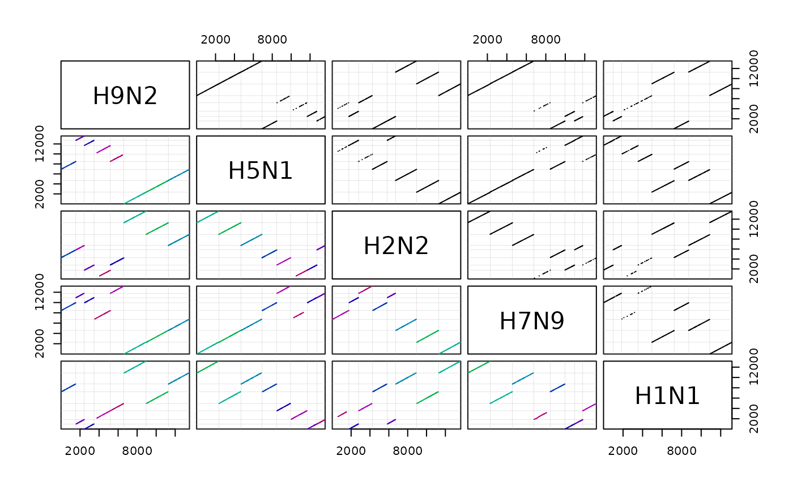

Finds Synteny in a Sequence Database
FindSynteny.RdFinds syntenic blocks between groups of sequences in a database.
Usage
FindSynteny(dbFile,
tblName = "Seqs",
identifier = "",
useFrames = TRUE,
alphabet = AA_REDUCED[[1]],
geneticCode = GENETIC_CODE,
sepCost = 0,
gapCost = -0.01,
shiftCost = 0,
codingCost = 0,
maxSep = 2000,
maxGap = 5000,
minScore = 30,
dropScore = -100,
maskRepeats = TRUE,
allowOverlap = TRUE,
storage = 0.5,
processors = 1,
verbose = TRUE)Arguments
- dbFile
A SQLite connection object or a character string specifying the path to the database file.
- tblName
Character string specifying the table where the sequences are located.
- identifier
Optional character string used to narrow the search results to those matching a specific identifier. If
""then all identifiers are selected. Repeated identifiers will find synteny between a sequence and itself, while blocking identical positions from matching in both sequences.- useFrames
Logical specifying whether to use 6-frame amino acid translations to help find more distant hits. Using the
alphabetis helpful when the genome is largely composed of coding DNA. IfFALSEthen faster but less sensitive to distant homology.- alphabet
Character vector of amino acid groupings used to reduce the 20 standard amino acids into smaller groups. Alphabet reduction helps to find more distant homologies between sequences. A non-reduced amino acid alphabet can be used by setting
alphabetequal toAA_STANDARD.- geneticCode
Either a character vector giving the genetic code to use in translation, or a list containing one genetic code for each identifier. If a list is provided then it must be named by the corresponding identifiers in the database.
- sepCost
Cost per nucleotide separation between hits to apply when chaining hits into blocks.
- gapCost
Cost for gaps between hits to apply when chaining hits into blocks.
- shiftCost
Cost for shifting between different reading frames when chaining reduced amino acid hits into blocks.
- codingCost
Cost for switching between coding and non-coding hits when chaining hits into blocks.
- maxSep
Maximal separation (in nucleotides) between hits in the same block.
- maxGap
The maximum number of gaps between hits in the same block.
- minScore
The minimum score required for a chain of hits to become a block. Higher values of
minScoreare less likely to yield false positives.- dropScore
The change from maximal score required to stop extending blocks.
- maskRepeats
Logical specifying whether to ``soft'' mask repeats when searching for hits.
- allowOverlap
Logical specifying whether to permit blocks to overlap on the same sequence.
- storage
Excess gigabytes available to store objects so that they do not need to be recomputed in later steps. This should be a number between zero and a (modest) fraction of the available system memory. Note that more than
storagegigabytes may be required, but will not be stored for later reuse.- processors
The number of processors to use, or
NULLto automatically detect and use all available processors.- verbose
Logical indicating whether to display progress.
Details
Long nucleotide sequences, such as genomes, are often not collinear or may be composed of many smaller segments (e.g., contigs). FindSynteny searches for ``hits'' between sequences that can be chained into collinear ``blocks'' of synteny. Hits are defined as k-mer exact nucleotide matches or k-mer matches in a reduced amino acid alphabet (if useFrames is TRUE). Hits are chained into blocks as long as they are: (1) within the same sequence, (2) within maxSep and maxGap distance, and (3) help maintain the score above minScore. Blocks are extended from their first and last hit until their score drops below dropScore from the maximum that was reached. This process results in a set of hits and blocks stored in an object of class ``Synteny''.
Author
Erik Wright eswright@pitt.edu
Note
FindSynteny is intended to be used on sets of sequences with up to ~100 million nucleotides total per identifier. For this reason, better performance can sometimes be achieved by assigning a unique identifier to each chromosome belonging to a large genome.
Examples
db <- system.file("extdata", "Influenza.sqlite", package="DECIPHER")
synteny <- FindSynteny(db)
#> ================================================================================
#>
#> Time difference of 1.36 secs
#>
synteny
#> H9N2 H5N1 H2N2 H7N9 H1N1
#> H9N2 8 seqs 74% hits 78% hits 76% hits 73% hits
#> H5N1 8 blocks 8 seqs 70% hits 74% hits 84% hits
#> H2N2 8 blocks 8 blocks 8 seqs 73% hits 71% hits
#> H7N9 8 blocks 8 blocks 8 blocks 8 seqs 74% hits
#> H1N1 8 blocks 8 blocks 8 blocks 8 blocks 8 seqs
pairs(synteny) # scatterplot matrix
